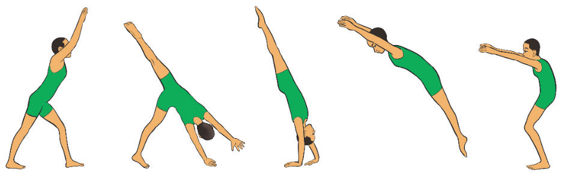
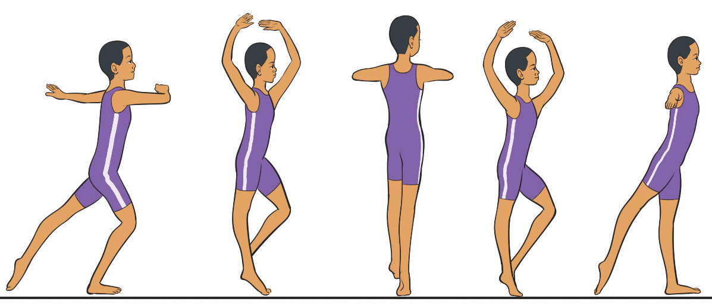

a b c d eTurn on one foot
A turn on one foot in gymnastics is a skill where a gymnast rotates on a single foot while maintaining balance and control. Turns are commonly performed on the floor and balance beam and are essential for artistic and rhythmic gymnastics. The following steps will help you practice turns on one foot:
Stand tall with arms in a controlled position and shift your weight onto the supporting foot.
Lift the free foot to the knee of the standing leg while keeping the toes pointed and the body tight;
Push up onto the ball of the foot and rotate smoothly using core control and spotting technique, Figure 4.9; and
Lower the foot gently and finish with arms stretched out in a balanced position.

a b c d e